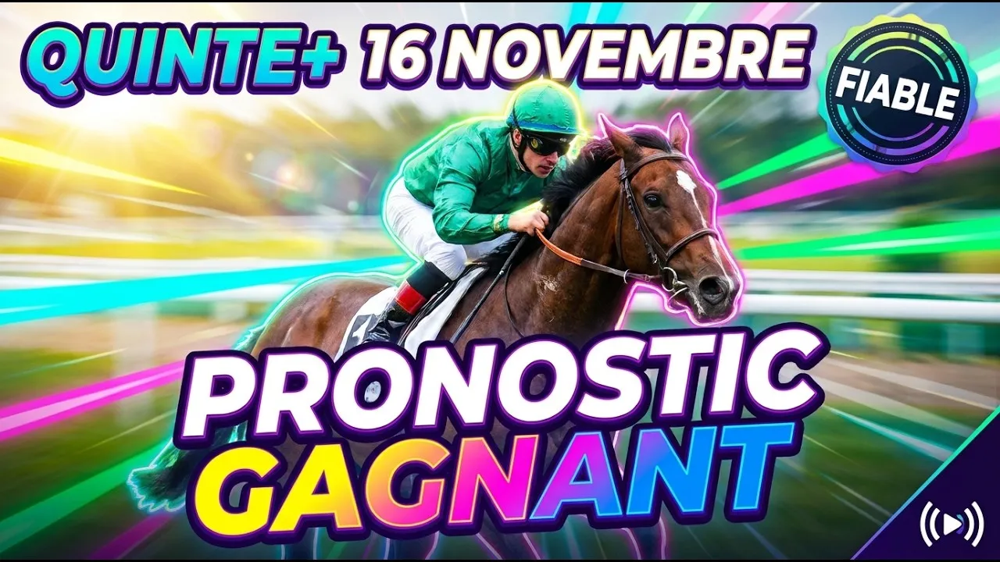

Lundi soir à Vincennes, le Prix d'Aigues-Mortes oppose quinze trotteurs de sept et huit ans sur les 2 100 mètres de la grande piste, départ à l'autostart. Épreuve européenne de classe D réservée aux chevaux n'ayant pas atteint 205 000 euros de gains, avec 56 000 euros à la clé.
Le tirage compte autant que la forme. Neuf chevaux s'élancent de la première ligne, six sont relégués au second rideau. Sur 2 100 mètres lancés, les premiers mètres décident presque tout : qui se place sans effort garde ses réserves pour la montée, qui doit cravacher pour remonter les paie cash dans l'emballage final.
Ce genre de course récompense rarement les attentistes. À l'autostart, il faut choisir son camp tout de suite : prendre la corde et assumer le train, ou accepter de voyager en deuxième rideau en pariant sur une pointe de vitesse finale. Les deux stratégies gagnent. Elles ne gagnent juste pas avec les mêmes chevaux.
Notre parti pris pour ce lundi est simple. Nous prenons les deux meilleurs profils de première ligne, sans état d'âme, et nous allons chercher la valeur en seconde ligne, là où les cotes s'envolent alors que la qualité est bien là. Domenik Jet arrive lancé sur cinq victoires en huit sorties, dont la dernière sur ce parcours exact. Il part du second rideau : c'est le prix à payer pour une cote généreuse.
Assumer un favori, assumer un cheval de second rideau, assumer un pari sur la forme plutôt que sur le papier. Voilà la ligne de ce pronostic.
Hongre de huit ans piloté par Anthony Barrier pour Emmanuel Bouyer. Pieds nus, il traverse une période creuse : deux allocations seulement lors de ses neuf dernières apparitions. Le long de la corde, avec le numéro un, il a un placement en or. Encore faut-il avoir les moyens de le défendre. Nous n'y croyons pas pour mieux qu'une petite place.
Hongre de sept ans dont Matthieu Abrivard prend le sulky. Déferré des quatre pieds, il vient de signer une deuxième place remarquable sur ce parcours exact fin octobre. Le pilote connaît son cheval par cœur et le tirage lui offre un départ en or. Première chance théorique, sans discussion.
Mâle de sept ans entraîné par Eric Hansen Bondo et confié à Benjamin Rochard. Pieds nus, ce concurrent d'origine italienne vient de se classer quatrième sur la grande piste sur plus long, avant de courir en progrès. Première ligne, pilote à 45 % de réussite dans les événements : les arguments sont là, mais il lui manque encore une victoire de référence.
Mâle de sept ans préparé et mené par le Scandinave Robert Bergh. Quatorze victoires en cinquante prestations, et pas une seule déception sur ses quinze dernières sorties. Déjà vu à son avantage sur la grande piste, déferré des quatre pieds, idéalement placé au centre de la première ligne. C'est notre base, et nous l'assumons sans détour.
Femelle de sept ans entraînée par Christophe Jariel et drivée par François Lagadeuc. Troisième sur ce parcours la fois précédente, en terminant tout près. Jument appliquée, d'une belle constance sur les tracés réduits, de nouveau pieds nus avec le numéro cinq derrière la voiture. Une carte sérieuse pour les accessits.
Hongre de sept ans confié à Éric Raffin pour Alain Chavatte. Après neuf mois de pause, il vient de prouver son regain de forme en échouant d'un rien pour la victoire sur plus long. L'écurie affiche près de 48 % de réussite avec Raffin. Un cheval en retard de gains, c'est exactement le profil qu'on veut dans un Quinté.
Hongre de huit ans guidé par Alexis Collette pour Kevin Leblanc. Déferré des postérieurs, plaqué des antérieurs, ce fils de Ready Cash avait créé la surprise en s'imposant sur la grande piste en septembre. Capable d'exploits quand il est disposé, il ne sera pas dans notre sélection de base, mais il mérite le détour pour pimenter les rapports.
Hongre de sept ans piloté par Mathieu Mottier pour David Persson. Confirmé sur ce tracé parisien, où il vient de prendre une honorable sixième place en s'élançant du second rideau. Cette fois, il part de la première ligne et se présente déferré des quatre pieds. Changement de configuration, changement d'ambition.
Hongre de huit ans préparé et mené par Romain Derieux. Lauréat d'un Quinté cet été sur l'hippodrome d'Enghien en départ lancé, ce fils de Boléro Love a de vraies qualités de vitesse. Le numéro neuf, à l'extérieur, complique la tâche. Mais le tandem entraîneur-pilote dépasse les 48 % de réussite : on ne l'écarte pas d'un revers de main.
Hongre de sept ans associé à Gabriele Gelormini pour Wolfgang Nimczyk. Forme étincelante : cinq victoires lors de ses huit dernières apparitions, dont la plus récente sur ce parcours exact. Oui, il part du second rideau. Oui, il faudra un parcours. Mais son duo avec Gelormini frôle les 56 % de réussite, et à ce niveau, c'est un argument qui pèse plus lourd que le tirage.
Femelle de sept ans pilotée par Antonin André pour Eric Hansen Bondo. Plaquée des antérieurs, déferrée des postérieurs, elle avait obtenu une belle troisième place sur la grande piste en début d'été. Du second échelon, elle tentera de brouiller les cartes si les favoris défaillent. Un lot d'outsider honnête.
Femelle de sept ans drivée par Alexandre Abrivard pour Pierre Levesque. Deux prestations décevantes sur la grande piste, un retour au meilleur niveau qui se fait attendre. Déferrée des quatre pieds, elle garde un pilote de premier plan, mais la seconde ligne ne pardonne pas dans cette configuration. Nous passons.
Hongre de sept ans présenté et mené par Dominik Locqueneux. Vainqueur d'un événement sur la cendrée parisienne au printemps, il s'est déjà bien comporté sur ce tracé de vitesse. Sa position au second échelon ne l'aide pas, mais sa pointe de vitesse finale peut lui offrir une allocation. Un complément, pas une base.
Femelle de huit ans guidée par Paul-Philippe Ploquin pour Jean-Louis Verrière. Elle a signé une victoire surprise sur ce parcours exact le 30 octobre et traverse une période de forme resplendissante. S'élancer en seconde ligne complique tout, et c'est précisément pourquoi sa cote restera généreuse. Un pari assumé.
Hongre de sept ans associé à David Thomain pour Christian Bigeon. Trois courses après trois mois d'absence, avec des progrès constants au travail. Déferré des quatre pieds, il affiche 63 % de réussite avec Thomain, le meilleur ratio du lot. En seconde ligne, mais avec un pilote qui sait attendre : c'est notre pari pour la fin de combinaison.
Le raisonnement tient en trois étages. En haut, Harpy : quatorze victoires, quinze sorties sans déception, le meilleur placement de la première ligne. On ne cherche pas plus compliqué, il porte la base. Juste derrière, Jewel de Banville et son retard de gains, puis Domenik Jet et sa série de victoires. Trois chevaux, trois profils différents, une même exigence de niveau.
Ensuite vient l'audace. Jazz d'Ourville, deuxième sur ce parcours fin octobre, mérite mieux que son statut. Kaxig In change de ligne et de ferrage, ce qui suffit parfois à tout changer. Isis de Pouline et Jag Haufor arrivent du second rideau avec des cotes qui ne reflètent pas leur forme réelle. Java des Caillons complète le lot avec sa constance.
Voilà une sélection qui ne cherche pas la sécurité à tout prix. Elle mise sur la forme, sur les ratios pilotes et sur deux chevaux de seconde ligne capables de renverser la course. Si le parcours se déroule proprement devant, la combinaison tient. Si la course se durcit, elle peut payer très cher.
Harpy porte la base : quatorze victoires, aucune fausse note sur ses quinze dernières sorties et le meilleur placement de la première ligne. Jewel de Banville arrive avec un retard de gains à combler, Domenik Jet avec cinq victoires sur ses huit dernières courses. Jazz d'Ourville et Kaxig In sont les deux premières lignes les plus sous-estimées du lot. Pour aller chercher la cote, Isis de Pouline et Jag Haufor sortent du second rideau, Java des Caillons apporte sa constance.
Base : 4 Harpy
Top 5 : 4 - 6 - 10 - 2 - 8
Couplé Placé :
4 Harpy et 6 Jewel de Banville avec 10 Domenik Jet, 2 Jazz d'Ourville et 8 Kaxig In
Deux sur Quatre :
4 - 6 avec 10 - 2 - 8 - 14
Multi en 5 :
4 - 6 - 10 - 2 - 8
Quinté+ Ordre :
4 - 6 en piliers avec 10 - 2 - 8 - 14 - 5 - 15 en associés
Retrouvez l'analyse vidéo complète sur notre chaîne YouTube Bravo Turf. Abonnez-vous, activez la cloche des notifications et laissez un pouce bleu si ce décryptage vous aide.
Jouez avec modération
Une méthode rigoureuse n'exclut jamais la prudence financière. Ne misez jamais plus que ce que vous pouvez vous permettre de perdre. Fixez-vous un budget hebdomadaire et tenez-vous-y. En cas de difficulté, consultez Joueurs Info Service au 09 74 75 13 13.